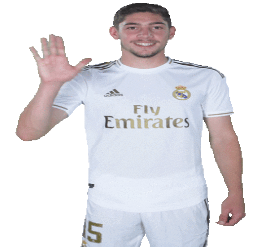
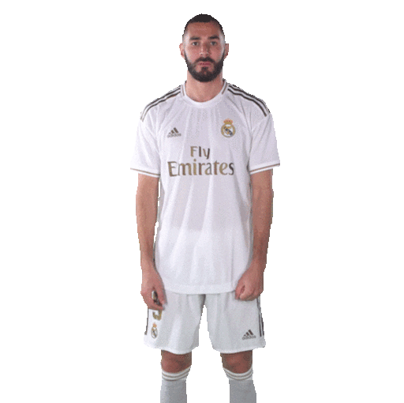
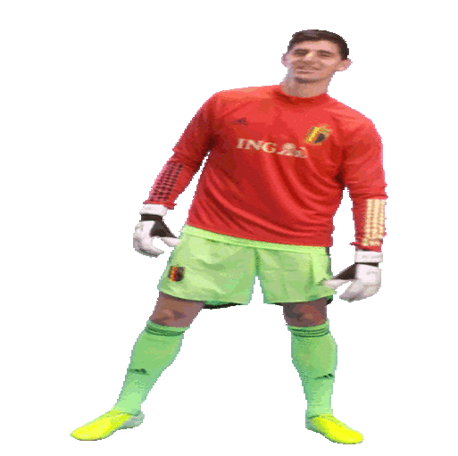
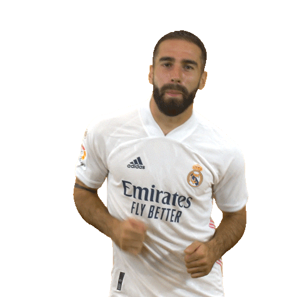

-
Lucas V. N°17

- LD
- ATA
Lucas Vázquez Iglesias (Curtis, 1 de julho de 1991) é um futebolista espanhol que atua como lateral-direito e atacante. Atualmente joga pelo Real Madrid. Integra o Real Madrid desde as categorias de base.
-
Valverde N°15
- MC
- PD
Federico Valverde (Montevidéu, 22 de julho de 1998) é um futebolista uruguaio que atua como meio-campista. Atualmente joga no Real Madrid.
-
Vinícius Jr. #20

- PE
Vinícius José Paixão de Oliveira Júnior (São Gonçalo, 12 de julho de 2000) é um futebolista brasileiro que atua como ponta-esquerda. Atualmente joga pelo Real Madrid e pela Seleção Brasileira.
-
Benzema #9
- SA
Karim Mostafa Benzema (em árabe: كريم حافظ مصطفى بن زيمة; Lyon, 19 de dezembro de 1987) é um futebolista francês que atua como centroavante.
-
Modric #10

- MC
Luka Modrić (Zadar, 9 de setembro de 1985) é um futebolista croata que atua como meio-campista. Atualmente defende o Real Madrid e a Seleção Croata. Foi eleito o Melhor Jogador do Mundo no ano de 2018.
-
Mendy #23

- LE
Ferland Sinna Mendy (Meulan-en-Yvelines, 8 de junho de 1995) é um futebolista francês que atua como lateral-esquerdo.
-
Courtois N°1
- GOL
Thibaut Nicolas Marc Courtois (Bree, 11 de maio de 1992) é um futebolista belga que atua como goleiro. Atualmente joga no Real Madrid e pela Seleção Belga.
-
Toni Kroos #8
- MC
Toni Kroos (Greifswald, 4 de janeiro de 1990) é um futebolista alemão que atua como meio-campista.
-
Rodrygo #21

- PD
Rodrygo Silva de Goes, mais conhecido como Rodrygo (Osasco, 9 de janeiro de 2001), é um futebolista brasileiro que atua como atacante. Atualmente joga no Real Madrid.
-
Carvajal #2
- LD
Daniel "Dani" Carvajal Ramos (Leganés, 11 de janeiro de 1992), é um futebolista espanhol que atua como lateral-direito.